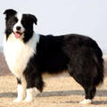

PetLovers
Menu
首页
论坛
百科

边境牧羊犬
拉丁学名：Border Collie
别名：牧羊犬、边境柯利犬
地区：英国，美国，澳洲
特征：精力充沛、警惕而热情。智商相当于一个6～8岁的小孩，聪明是它的一大特点
简 介
边境牧羊犬（Border Collie），原产于苏格兰边境，为柯利牧羊犬的一种，具有强烈的牧羊本能，天性聪颖、善于察言观色，能准确明白主人的指示，可借由眼神的注视而驱动羊群移动或旋转，被当成牧羊犬已有多年的历史，在世界犬种智商排行第一名。 特点是聪明、学习能力强、理解力高、容易训练、善于和主人沟通、温和、忠诚、服从性好，其忠心程度可以用如影随形来形容。由于温和忠诚的性格不乱叫，一度成为最受城市人口欢迎的宠物。而且边境牧羊犬还是飞盘狗最具竞争力的犬种，是历年飞盘狗世界杯大赛的主角。 发展历史 边境牧羊犬又名边境柯利犬，是一种非常聪明的犬种，主要分布在四个国家——英国、美国、澳大利亚和新西兰。美国科学家通过大量测试研究发现，边境牧羊犬的服从智商超过德国牧羊犬和贵妇犬，在一百多个犬种中排名第一。最早时期苏格兰被放牧的羊以及用来看管羊的犬都是在苏格兰群岛上发现的，那些犬都是来源于以前从爱尔兰移居到苏格兰的教士，他们带过去的犬，并且是在早期维京人还没入侵苏格兰之前就已经过去了的。可是在这种崎岖的地理环境内人们也就只有依靠犬来帮忙集合、驱赶以及看牧牲畜了。根据现代牧羊犬的起源，它们有着“眼神控制”这样的能力，这种能力是通过在英格兰和苏格兰边境地方的牧羊人发展并且训练出来的，所以人们把这种犬就称做“边境牧羊犬”。 形态特征 边境牧羊犬头部宽阔，脑袋的长度与前脸的长度几乎相等。耳朵呈中等大小，分得较开，耳朵灵敏且灵活，保持竖立或半立。眼部分的较开，中等大小，卵形，眼睛颜色多为褐色。尖端较细的口吻直到鼻尖，鼻孔发达，鼻子一般为黑色。胸部深、宽度适中。前肢骨骼发达，彼此平行。脚腕略微倾斜。狼爪可以切除，足爪紧凑呈卵形，脚垫深且结实，脚趾适度圆拱，紧凑，趾甲短而结实。后驱宽阔，并向尾巴处倾斜。大腿宽长深膝关节角度恰当。后肢股量充足，彼此平行且有轻微的牛肢。 性格特征 性格顽强，温顺，有敏锐、机警、灵敏、既不凶恶也不羞怯的气质，又聪明、容易训练、温和、忠诚、顺从等特点。天性聪慧、能察言观色，能确实明白主人的指示。
宠物情缘XXXXXXXXXXXXXXXXXXXXXXXXXXXXXXXXXXXXXXX